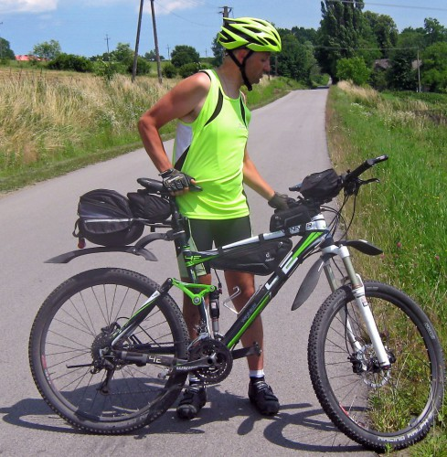

Весной этого года в трекере активности Runkeeper, которым я пользуюсь пару лет, я поставил цель проехать на велосипеде в течение года 1000 километров.
На этой неделе цель в 1000 километров была достигнута и я решил рассмотреть альтернативные программы и сервисы для учёта тренировок велосипедистами и бегунами.
В AppStore представлено несколько приложений для этих целей, я рассмотрю 4 самые популярные. На тестировании у меня были только бесплатные версии. Каждая из программ имеет платный вариант с расширенным набором функций.
Все программы умеют рисовать маршрут на карте, шарить его в социальные сети, подсчитывать расход калорий и высчитывать среднюю скорость. Кроме того, у всех программ есть веб-интерфейс, который нужен, к примеру, чтобы нарисовать маршрут или экспортировать трек. Также все сервисы имеют социальную составляющую: вы можете заводить дружбу с другими спортсменами и следить за их тренировками. К тренировкам везде можно прикрепить фотки и заметки.
В платный вариант все программы выносят «живое» отслеживание тренировок. То есть ваши друзья могут онлайн следить за тем, где вы находитесь и как ваши дела. Кроме того, расширенная аналитика (сравнение тренировок и отслеживание прогресса) тоже всегда предоставляется только в платной версии.
Теперь поговорим о различиях и пользовательских ощущениях.
Runkeeper
Как я уже и написал, это моя основная программа, которой я пользуюсь пару лет. Использую бесплатную версию. Платная версия — самая дорогая среди конкурентов при оплате за месяц: 599 рублей в месяц или 2390 рублей в год. Комьюнити у программы самое маленькое. Вероятно, из-за стоимости про-версии.
Главным отличием программы от конкурентов оказалась возможность постановки целей в бесплатной версии. Цели могут быть любыми: максимальное расстояние за тренировку, потеря веса, совокупное расстояние за период.
Программа хорошо русифицирована, есть настраиваемые русские аудиоподсказки. Web-версия не русифицирована.
Программа однажды не запустилась корректно из центра уведомлений iPhone и вместо маршрута нарисовала прямую между точками, но это я списываю на баг конкретной версии.
Версия для телефонов с Windows отсутствует.
Runtastic
Единственная из всех программ, которая представляет дополнительные функции на за счёт абонентской платы, а после покупки PRO-версии. В Кемерове ею, по наблюдениям, пользуется много человек. Стоимость PRO-версии всего 299 рублей.
В бесплатной версии подсказки ограничены только английским языком. К тому же «Джулия» не будет вам говорить бесплатно о вашей скорости или ритме, только длительность и дистанция.
В программу можно закачать кусок карты, чтобы использовать её без доступа в интернет. Веб-версия хорошо русифицирована, но и приложение и сайт показались мне перегружены информацией.
Целей нет вообще.
Endomondo
Приложение используют многие профессиональные спортсмены. Огромное коммьюнити по всему миру. К примеру в «CHALLENGE: 2015 = 2015km» принимает участие почти 71 тысяча спортсменов, а лидер Kazimierz Piechówka проехал на велосипеде в этом году уже 25075,25! километров.

Эх, Казимир[/caption]
Приложение интересно тем, что рассчитывает дегидратацию организма. К примеру, после вчерашней 10-километровой поездки по берегу Томи приложение рекомендовало мне выпить 0,8 литра воды. Такое напоминание бывает полезным.
Веб-версия ужасно свёрстана, русский язык отсутствует и в приложении и в веб-версии.
Цели можно ставить только недельные.
Про-версия стоит 349 рублей в месяц или 1790 рублей в год.
Strava
Приложение Strava также использует большое количество профессионалов по всему миру. Если бы первое место можно было присуждать за дизайн, то Strava была бы безусловным лидером. Аккуратная веб-версия. Лаконичное приложение.
Интересной функцией сервиса является возможность задать приватную зону на карте. Эта зона, к примеру ваш дом, не будет отображаться на треках. Кроме этого в Strava большее значение придаётся геймификации спорта. Выполняя те или иные задания, спортсмены могут рассчитывать на скидки и специальные предложения в интернет-магазину Strava.
Программа мило именует тренировки. К примеру вчерашняя поездка на велосипеде обозначена как «Вечерний велозаезд».
Стоимость про-версии составляет 349 рублей в месяц или 3490 рублей за год. В бесплатной версии Strava не показывает текущую скорость.
upd. если покупать премиум-доступ на сайте, а не в appstore, то он обойдётся вам значительно дешевле: 199 рублей за месяц или 1990 за год.
Итоги
Для проверки работы приложений я вчера проехал на велосипеде по городу и по берегу Томи. В каждом приложении была активирована функция «Автопауза». Результаты у всех программ оказались разными.
Видно, что Runtastic хуже всех распознаёт остановки, а Endomondo похоже переврал с калориями (Strava насчитала 164).
Выбор приложений для занятий спортом безусловно есть. Набор функций в бесплатных версиях по большому счёту достаточен для любительского спорта. Самая доступная из программ — Runtastic. Только в Runkeeper можно бесплатно ставить себе спортивные цели. Endomondo и Strava — настоящие социальные сети для спортсменов.
Встретимся на велодорожках города.